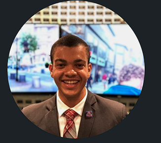

Albert Vinicius Pereira Conceição | WDD 130
Hello, I'm Albert. I'm from Camaçari, Brazil. I'm 25 years old and I'm looking forward to be a better Software Developer.
Hello, I'm Albert. I'm from Camaçari, Brazil. I'm 25 years old and I'm looking forward to be a better Software Developer.